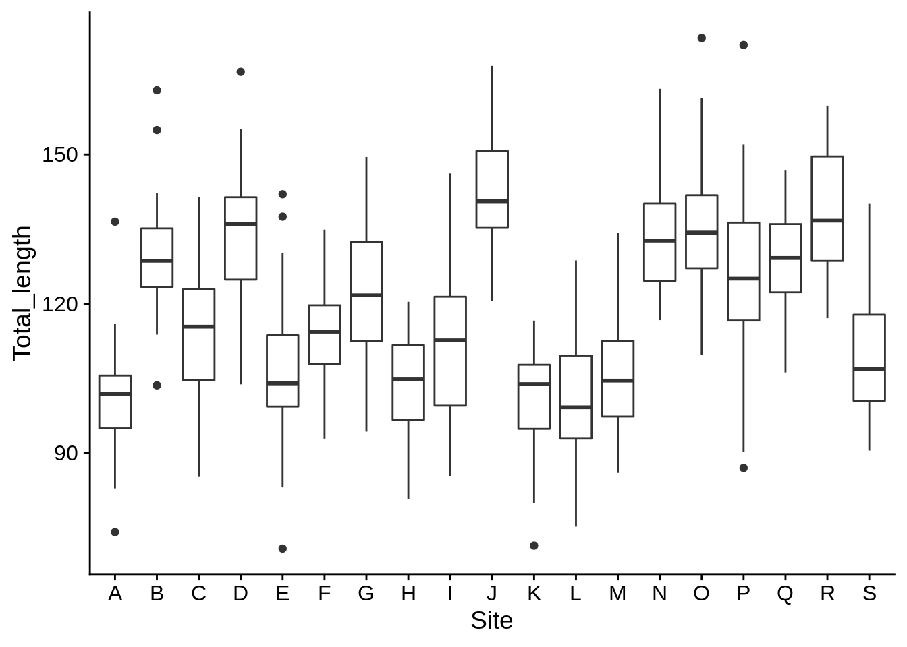

C Data manipulation with dplyr
Let's talk about data manipulation. We'll be using the dplyr package, which is part of tidyverse First, we need to load our packages & data.
library(tidyverse)
library(cowplot)
theme_set(theme_cowplot())
lizards <- read_csv("example_data/anoles.csv") # See Appendix A if you don't have this dataC.1 The Pipe (%>%)
The pipe ( %>% ) operator strings functions together in a sequence. It takes the result of the function on its left and makes it the first argument to the function on the right. Let's say you wanted to calculate the base-12 log of the mean of the square root of the absolute value of numbers between -50 and 50. The traditional way to write that would be:
log(mean(sqrt(abs(-50:50))), base = 12)## [1] 0.6256332This is rather difficult to read; it has a lot of nested parentheses, and you need to start from the inside and work your way out to see what's happening. With the pipe, you could re-write it like this:
-50:50 %>% abs() %>% sqrt() %>%
mean() %>% log(base = 12)## [1] 0.6256332Using pipes can make your code much clearer, and is quite helpful when creating a sequence of related transformations on data.
In RStudio, you can insert the pipe by pressing Ctrl+Shift+M.
C.2 Adding/modifying columns (mutate)
The mutate() function creates a new column in a data frame. For example, the total length of a lizard is defined as its snout-vent length (SVL) plus it's tail length.
mutate(.data = lizards, total_length = SVL + Tail) %>%
View() # Use View to look at the results in RStudio| Site | Color_morph | Limb | Mass | Diameter | Height | SVL | Tail | Perch_type | total_length |
|---|---|---|---|---|---|---|---|---|---|
| A | Green | 14.3 | 6.46 | 8 | 164 | 61.8 | 43.9 | Other | 105.7 |
| A | Brown | 12.3 | 5.82 | 18 | 151 | 57.1 | 42.2 | Tree | 99.3 |
| A | Blue | 10.5 | 4.29 | 36 | 130 | 49.1 | 25.0 | Building | 74.1 |
| A | Brown | 10.3 | 5.29 | 31 | 131 | 51.2 | 38.2 | Tree | 89.4 |
| A | Brown | 10.9 | 5.69 | 20 | 138 | 51.5 | 46.9 | Shrub | 98.4 |
| A | Brown | 10.4 | 5.84 | 25 | 137 | 45.3 | 59.0 | Shrub | 104.3 |
This uses the lizards data to create a new column, total_length. Within the mutate command, you can reference columns directly by their names (like you do for aes() in ggplot). Mutate can create multiple new columns in a single command.
mutate(lizards, # generally, the .data argument is not named
# All subsequent arguments refer to new columns
total_length = SVL + Tail,
rel_limb = Limb/SVL,
log_total_length = log(total_length),
# You can also change an existing column by saving something to its name
Color_morph = paste(Color_morph, "morph") # add "morph" after each color
) %>% View()| Site | Color_morph | Limb | Mass | Diameter | Height | SVL | Tail | Perch_type | total_length | rel_limb | log_total_length |
|---|---|---|---|---|---|---|---|---|---|---|---|
| A | Green morph | 14.3 | 6.46 | 8 | 164 | 61.8 | 43.9 | Other | 105.7 | 0.2313916 | 4.660605 |
| A | Brown morph | 12.3 | 5.82 | 18 | 151 | 57.1 | 42.2 | Tree | 99.3 | 0.2154116 | 4.598146 |
| A | Blue morph | 10.5 | 4.29 | 36 | 130 | 49.1 | 25.0 | Building | 74.1 | 0.2138493 | 4.305415 |
| A | Brown morph | 10.3 | 5.29 | 31 | 131 | 51.2 | 38.2 | Tree | 89.4 | 0.2011719 | 4.493121 |
| A | Brown morph | 10.9 | 5.69 | 20 | 138 | 51.5 | 46.9 | Shrub | 98.4 | 0.2116505 | 4.589041 |
| A | Brown morph | 10.4 | 5.84 | 25 | 137 | 45.3 | 59.0 | Shrub | 104.3 | 0.2295806 | 4.647271 |
Note that this doesn't modify the lizards dataset. It creates a new data frame that has an additional column. You'll need to save it as a new variable to use it.
lizards_full = lizards %>% # It's also traditional to pipe the data argument in
mutate(total_length = SVL + Tail,
rel_limb = Limb/SVL,
log_total_length = log(total_length)) Tidyverse functions are designed to be piped together. For example:
lizards %>%
mutate(Total_length = SVL + Tail) %>%
ggplot(aes(x = Site, y = Total_length)) +
geom_boxplot()
Creating a quick plot at the end of a data manipulation step can be a good way to get a visual idea of what you're doing.
Here are a few other helpful things to do with mutate():
lizards %>% mutate(
intercept = 1, # Add a constant
row_number = 1:n() # the n() function tells you how many rows are
# in the current data frame (it only works in mutate & related functions)
) %>% View()| Site | Color_morph | Limb | Mass | Diameter | Height | SVL | Tail | Perch_type | intercept | row_number |
|---|---|---|---|---|---|---|---|---|---|---|
| A | Green | 14.3 | 6.46 | 8 | 164 | 61.8 | 43.9 | Other | 1 | 1 |
| A | Brown | 12.3 | 5.82 | 18 | 151 | 57.1 | 42.2 | Tree | 1 | 2 |
| A | Blue | 10.5 | 4.29 | 36 | 130 | 49.1 | 25.0 | Building | 1 | 3 |
| A | Brown | 10.3 | 5.29 | 31 | 131 | 51.2 | 38.2 | Tree | 1 | 4 |
| A | Brown | 10.9 | 5.69 | 20 | 138 | 51.5 | 46.9 | Shrub | 1 | 5 |
| A | Brown | 10.4 | 5.84 | 25 | 137 | 45.3 | 59.0 | Shrub | 1 | 6 |
Here are a few exercises to try:
- Add a column to the
lizardsdataset that gives the lizard's height relative to the maximum height of any lizard (hint: use max(Height) in a mutate command to find that value).
- Calculate perch circumference
(Diameter * pi), then pipe that result into a scatter plot of relative limb length vs. circumference. Note thatpiis a pre-defined variable in R.
C.3 Subsetting by row (filter)
(in progress)